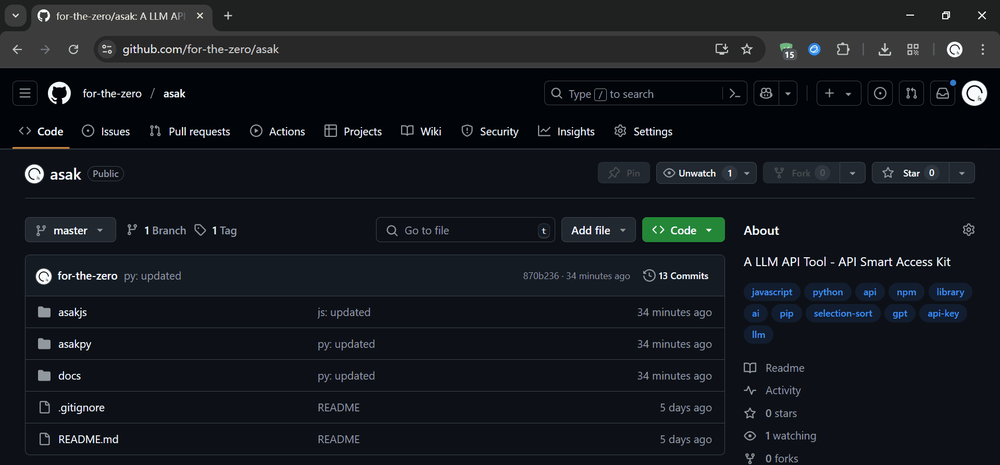

asak，一个轻量级的小项目，是我对制作python和js库的一个小尝试
先挂链接：for-the-zero/asak: A LLM API Tool-API Smart Access Kit
既然README和 文档都写得很清楚了，那么我就写一下心路历程（？）吧
由于有一些不会的，也是找了一些ai帮助了一点点
文档
先写文档，再写js代码，再改文档，很神奇是不是
拼写
这个不是bug
只是把available拼写成了avaliable
（乐）
openai的js库
一开始没有找到什么文档，干脆直接问ai
结果这ai不知道拿的是什么版本的api糊弄我，搞得我在调用的时候搞了好几下
顺便说一下，js的生成器函数创建起来比py麻烦些哦
还有就是测试CDN导入的时候，发现openai库需要dangerouslyAllowBrowser才能搞，行啊（这就是1.0.1的由来）
Python
刚好动工的时候研学，于是打算用手机写
没找到合适的编辑器，只有一个差劲的凑活用
太难用了，缩进都得点两下，回车的时候只有结尾是冒号的时候才能缩进
就没用过这么难用的
回到家想了一想，懒得搞，把js喂给了ai
一行一行人工审核就搞定了
pypi
初出茅庐，不会上传
第一次呢，是pyproject.toml和__init__.py同目录
上传完测试一下发现什么都没导入，打开tar包一看什么代码都没有，就是个空的
于是创建了一层目录重新上传，这就是1.0.1的由来~~（梅开二度~~
后来
审视了一下自己的史堆~~（太小了不能说是山）~~
一堆判断配置符不符合要求，拍拍头，说，直接在构造的时候检查配置不就完了吗
很快啊，搞定了
就这样，没什么东西想写了